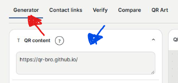

език
Ръководство за потребителя
Как да използвате QR BRO от нулата
Отворете връзките за контакти, за да създадете връзка, или копирайте текста, който искате да съдържа вашият QR код.

Отворете генератора и поставете вашата връзка или текст в полето за QR съдържание.

Опитайте различни полета, цветове и форми, докато не харесате кода във визуализацията.

Щракнете върху големия бутон за изтегляне на PNG под визуализацията, за да запазите своя QR код като изображение.

Има още много опции, на които не съм направил екранни снимки или качил, но схващате идеята.
Никой не ми плаща за това, а кучето ми чака цял час за разходка.
Един ден ще стигна до останалите.
Генератор
Отворете в QR BRO ↗Въведете URL или текст. Визуализацията се актуализира, докато редактирате. Изтеглете PNG за едно изображение или ZIP за отделни QR слоеве.

QR съдържание
Поставете пълния текст, който искате скенерът да прочете.
Кодиране
Изберете корекция на грешки и модел на маска. По-високата корекция оставя повече място за възстановяване на повредени данни, но може да увеличи плътността.
Маржове
Задайте тихата граница в модулите. Четири ясни модула помагат на скенерите да открият кода. Шумът, безопасното пространство и контролите на слоевете променят околния дизайн.
Пиксели и маркери
Изберете модулни форми и стилизирайте ъгловите маркери отделно. Сканирайте резултата след промяна на формата.
Цветове
Изберете светлите и тъмните цветове или ги обърнете. Поддържайте достатъчно контраст за сканиране.
Разширени опции
Разширете тази група, за да контролирате QR плътността, размерите и перспективата.
Версия и размер на пиксела
Ограничете обхвата на QR версията и коригирайте размера на пикселите. Ако съдържанието надвишава лимита на версията, съкратете го или увеличете максимума.
Трансформирайте
Регулирайте перспективата на всяка ос. Проверете експортираното изображение след прилагане на изкривяване.
Мащаб и аспект
Задайте мащабиране на предварителен преглед, размер на платното, пропорции и прозрачност. Използвайте JSON контролите, за да експортирате или презаредите редактируеми настройки.
Връзки за контакт
Отворете в QR BRO ↗Първо изберете платформа. Въведете искания получател, като международен телефонен номер, потребителско име или имейл. Добавете съобщение, където се поддържа. За групови имейл полета отделете получателите със запетаи или интервали. Копирайте генерираната връзка или изберете Създаване на QR, за да я отворите в генератора.

Проверете
Отворете в QR BRO ↗Качете, пуснете или поставете QR изображение. Прочетете декодираното съдържание и състоянието на сканиране. Прегледайте контраста, тихата зона и плътността, след което копирайте резултата или го изпратете на генератора.

Разлики в изображенията
Проверете кои пиксели са се променили между оригиналното и обработеното изображение.
Корекции на изображението
Опитайте с преоразмеряване, скала на сивото, контраст, яркост или замъгляване. Заключете настройка, за да я запазите по време на произволни опити. Сравнете новото сканиране с оригинала.
Сравнете
Отворете в QR BRO ↗Качете целево изображение и QR източник или използвайте изхода на текущия генератор като източник. Третият преглед картографира разликите между модулите. Можете да увеличите всеки вход и да копирате неговия декодиран текст.

Целева обработка
Коригирайте сивата скала, контраста, яркостта, замъгляването и пикселизацията преди сравнение.
Подравняване на мрежата
Използвайте целта или източника като споделена референтна мрежа. Изберете независимо подравняване, когато изображенията имат различни полета. Ръчните контроли регулират размера на мрежата и полето.
Външен вид на решетката
Активирайте решетката, изберете изображенията, върху които се показва, и коригирайте цвета и непрозрачността на линията.
Настройки за наслагване
Активирайте наслагването и коригирайте смесването и непрозрачността, за да сравните припокриващите се детайли.
Настройки на разликата
Изберете цветови режим за съвпадения, тип разлика или интензитет. Изберете модули за по-внимателна проверка. Пренаредете селекциите или променете техните идентифициращи цветове.
Сравнителна статистика
Прочетете броя на несъответствията и средната яркост, за да оцените избраното сравнение.
Настройки за корекция
Коригирайте корекцията, визуализирайте я, маркирайте разликите и изтеглете коригиращото изображение или маска.
Моят акаунт и слотове за запазване
Отворете в QR BRO ↗Използвайте бутоните с цифри, за да превключвате между десет локални проекта. Влезте, за да синхронизирате между устройствата. Създайте акаунт с имейл и парола и потвърдете чрез имейл връзката или кода. Google и GitHub също са налични. Във вашия акаунт можете да редактирате своя профил, да управлявате методите за влизане и двуфакторното удостоверяване, да преглеждате конфликтите при синхронизиране, да архивирате настройките или да излизате.

Външен вид и език
Отворете в QR BRO ↗Отворете бутона за външен вид до слотовете за запазване. Изберете език, тема и светъл или тъмен режим. Вашият избор на език се запомня на това устройство.

Кредити
Отворете в QR BRO ↗Отворени кредити за връзки към създатели, библиотеки и признания. Условията за ползване са свързани в долния колонтитул на сайта.